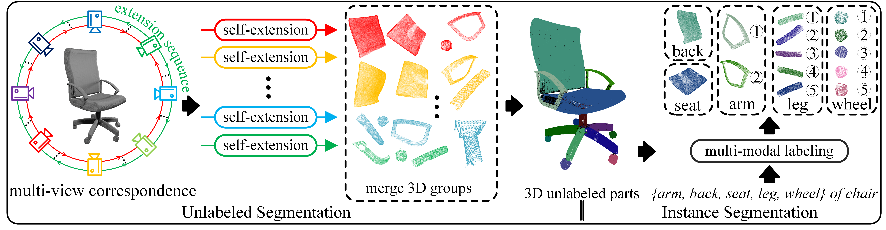
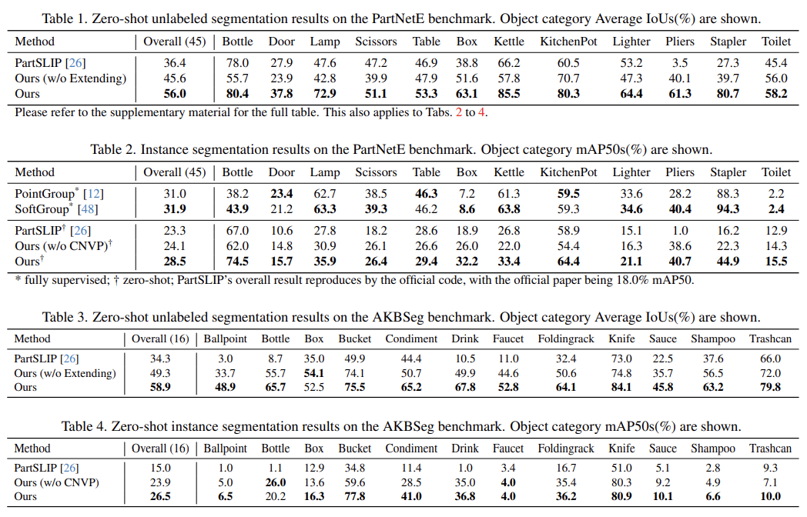

Recently, many 2D pretrained foundational models have demonstrated impressive zero-shot prediction capabilities. In this work, we design a novel pipeline for zero-shot 3D part segmentation, called ZeroPS. It high-quality transfers knowledge from 2D pretrained foundational models to 3D point clouds. The main idea of our approach is to explore the natural relationship between multi-view correspondences and the prompt mechanism of foundational models and build bridges on it. Our pipeline consists of two components: 1) a self-extension component that extends 2D groups from a single viewpoint to spatial global-level 3D groups; 2) a multi-modal labeling component that introduces a two-dimensional checking mechanism to vote each 2D predicted bounding box to the best matching 3D part, and a Class Non-highest Vote Penalty function to refine the Vote Matrix. Additionally, a merging algorithm is included to merge part-level 3D groups. Extensive evaluation of three zero-shot segmentation tasks on PartnetE datasets, achieving state-of-the-art results with significant improvements (+19.6%, +5.2% and +4.9%, respectively) over existing methods. Our proposed approach does not need any training, fine-tuning or learnable parameters. It is hardly affected by domain shift.

Given a 3D object point cloud, instance-level parts are obtained. Next given a text prompt, each part gets a label.

Zero-shot part segmentation result of our method. Left: 'Global-level Merge' settings (T = 0.3). Middle: 'Local-level Merge' settings (T = 0.1). Right: 'Local-level Merge' settings (T = 0.3).

Zero-shot part segmentation result of PartSLIP (CVPR2023) and ours. Left: Input. Middle: PartSlip. Right: Ours.

Our ZeroPS demonstrates impressive zero-shot performances and achieves state-of-the-art results with significant improvements over existing methods.
@article{xue2023zerops,
title={ZeroPS: High-quality Cross-modal Knowledge Transfer for Zero-Shot 3D Part Segmentation},
author={Xue, Yuheng and Chen, Nenglun and Liu, Jun and Sun, Wenyun},
journal={arXiv preprint arXiv:2311.14262},
year={2023}
}